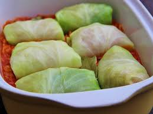

Tradiční pokrm z plněných zelních listů s masovou náplní, pečený v rajčatové omáčce se zakysanou smetanou.
Mleté maso smícháme s najemno nakrájenou cibulí, osolíme a okořeníme paprikou a pepřem. Vše důkladně prohněteme.
Z celé hlávky zelí vyřízneme košťálový střed, aby se lépe odlupovaly listy. Hlávku vložíme do velkého hrnce s vroucí vodou a spaříme asi 5–10 minut. Poté zkusíme, zda se listy dají dobře odlupovat. Pokud ano, hlávku vyjmeme a listy postupně odlupujeme. Necháme osušit a vychladnout na papírové utěrce.
Z masové náplně vytvoříme válečky a balíme je do zelných listů. U mladého nebo menšího zelí počítáme na závitek dva listy, u staršího stačí jeden. Tvrdší žebra listů seřízneme, aby se závitky lépe balily. Váleček položíme do středu listu, okraje přeložíme přes maso a zabalíme závitek.
Troubu rozehřejeme na 200 °C. Do pekáče nalijeme olej a dosklovata na něm osmažíme 2 nakrájené cibule.
Přidáme na nudličky pokrájenou 1/4 zbylé hlávky zelí, osolíme, přidáme nové koření, celý pepř, bobkové listy a rajčatový protlak. Restujeme 2 minuty.
Podlijeme vodou, ve které jsme vařili hlávku, a na připravený základ naskládáme závitky. Přiklopíme a pečeme v rozehřáté troubě asi 40 minut.
Závitky vyjmeme a udržujeme v teple. Z omáčky odstraníme bobkový list a koření. Odebereme trochu omáčky a vmícháme do ní zakysanou smetanu (aby se nesrazila). Směs nalijeme zpět do pekáče a promícháme.
Do omáčky vložíme teplé závitky a pekáč vrátíme na 5–10 minut do trouby, aby se vše prohřálo.